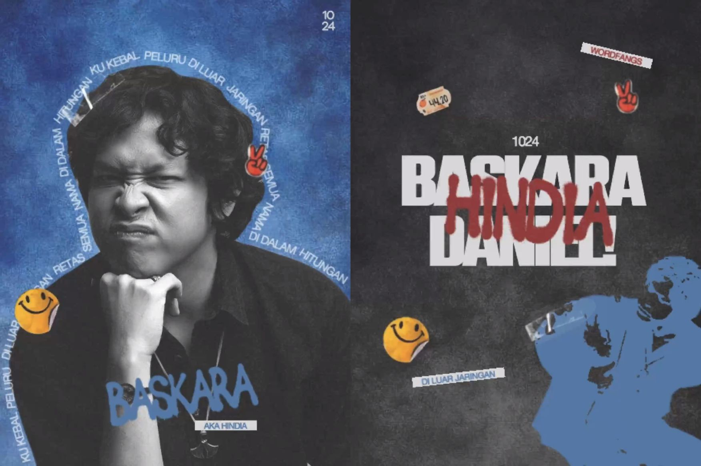

"APAKAH KAMU PERCAYA AKU SUDAH MELUPAKANMU?"
Hindia, proyek solo dari Baskara Putra, telah mengubah lanskap musik Indonesia dengan lirik yang jujur dan personal. Album "Menari Dalam Bayangan" menjadi saksi bisu bagaimana kegelisahan generasi muda dirangkum dalam melodi yang indah.
Setiap lagu di dalamnya bercerita tentang trauma, harapan, dan realita hidup yang seringkali pahit namun harus tetap dijalani dengan kepala tegak.
Karya-karya Hindia tidak hanya sekadar musik, melainkan sebuah jurnal visual dan audio. Melalui estetika vintage, ia mengajak pendengar kembali ke akar emosi terdalam.